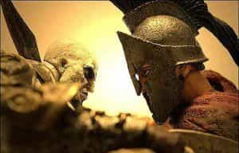

Michael is the author of Staying Married in a Degenerate Age. Follow him on Twitter or Facebook. You can read more of his writing at Honor and Daring.


If you were a parent in the 1950s, you had a pretty good idea of what the future held for your sons. The path to success was set: get good grades in school, go to a respected university, and get hired by a large corporation. But parents today have no such obvious path to impart to their children. We are living on a powder keg and we can’t predict if and when it will explode. This means that we have to prepare our sons to succeed regardless of what the future holds.
The movie 300 gives a glimpse of the agoge (training) that young Spartan boys underwent to become full-fledged Spartan warriors. While we don’t know exactly what the agoge of the Spartans consisted of, we can guess that it involved learning how to fight as part of the Greek Phalanx, strengthening and endurance exercises, and activities that developed confidence and toughness.
The modern age did away with the necessity of putting boys through a strict agoge. The modern military is staffed by professional warriors. Everyone else in the society is a civilian with almost no idea of warfare. The only training most of us receive is training to become a cog in a giant corporate machine. The hamster wheel of the modern world is to get a job, overconsume and go into debt, and spend the next 50 years working to pay for the overconsumption.
But the current environment is not sustainable. Even mainstream pundits recognize that the neoliberal order is beginning to crack, and for good reason: it enriches a tiny elite while slowly eroding the living standards for the masses of people in North America and Europe. The only questions are when and how the neoliberal order will finally fall.
This uncertain situation makes it unadvisable to educate your children in the same way you were educated. The next generation of children, especially boys, must be trained in both the arts of peace and the art of war. In other words, we need to create a modern agoge for our sons. This article is my attempt to suggest a possible approach.
I don’t believe that our civilization will collapse into something like the Dark Ages where we lose the technology we have built up to this point. Therefore, it is a safe to assume that we cannot neglect the basics. The standard subjects that are taught as part of the Grades 1-12 curriculum–reading, writing, arithmetic, history, science, and grammar will continue be important for all children to learn.
Public schools in the US teach all of these things but I think they do a shoddy job of it, so I would not entrust my child to the them. First, public schools are constantly experimenting with a way to teach math that will cause all the children to “get it.” Unfortunately, there is no magic method of teaching math and the newfangled math curriculums end up being less and less effective. The result of this constant changing of curriculum is that most kids graduate from high school without a good foundation in math.
Second, the mission of public schools is to educate future employees for US corporations—not academic excellence. Thus, there is a lot of wasted time in the school day. After all, children must learn to spend a certain number of hours in the “office” regardless of whether they are being productive.
There is one part of the standard curriculum that would need more emphasis: American children are woefully deficient in knowledge about history, particularly European history. As a student in the public schools, I was taught about the Revolutionary War, slavery, the Civil War, racism, Jim Crow laws, almost nothing about WWI, WWII, the New Deal, and the Civil Rights movement. I also had a class in Russian history that was pretty basic.
I left high school with a poor understanding of world history and have had to spend much of my adult life remedying this deficiency. This should not be the case. A good understanding of history gives a person the ability to learn from the mistakes other have made. This perspective is necessary if you want your children to grow up to be effective citizens.

While the standard subjects are important, they are not sufficient to equip our children for the unpredictable future. These additional subjects will be useful no matter what the future holds.
As I mentioned above, American education is aimed at producing employees, not independent business men. This is a bad strategy as the corporate employee model amounts to indentured servitude. A modern agoge recognizes that business ownership is a better path to financial stability.
Public schools teach very little about finance. That ignorance leads many people to make bad financial decisions. Our children should know about how to invest, different investment vehicles, and the best strategies before they finish their high school level education.
In life, what you know may be worth less than how you react to situations. I am sure you know men who may be very educated but who are not as successful as business men with much less education and brain power. The difference is in the mettle of each individual. Perseverance, grit, self-confidence, and strong people skills must be instilled in children from a young age.
The ancients trained in rhetoric—the ability to move men by the power of speech. A well-rounded person should be able to write and deliver a speech that will sway his listeners.

Up until this point, pretty much everything I have mentioned can be taught to our daughters as well as our sons. But there are differences between the two sexes. Here are some of the masculine qualities we need to instill in our sons.
Every man must be able to defend himself in hand-to-hand combat. There are many martial arts that could give your sons an adequate self-defense but the arts that have lots of sparring are better than ones that emphasize forms or partner practice that involves play-acting. Brazilian Jiu-jutsu, boxing, wrestling, and MMA training are all viable options. Skill with a knife and a handgun would also be included as part of a program of modern agoge.
If civil war lies in the future, men who can live off the land for short periods of time will fare better than those whose only experience with food is going to a supermarket. Plus, hunting, fishing, and camping can serve as excellent coming of age rituals.
In ancient world, there were few professional warriors. The military consisted of able-bodied men who trained in the arts of war part time to protect their land and families from invaders. In early Rome, soldiers were responsible for purchasing their own weapons and armor. Thus, even farmers would know the basics of military strategy. Today, unless they have served in the military, most American men are completely ignorant of military tactics. Given the unstable world situation, it would be a mistake to let our sons grow up ignorant of the art of war.
These are my preliminary thoughts on what should comprise a modern agoge. We are in uncharted waters where the old pedagogy will fail the future generation. However, we can’t wait for the education “experts” to show us the way forward. It is up to us in the RoK community to blaze the trail.
Read More: How Modern Masculine Men Can Bring Back The Era Of The Gentleman